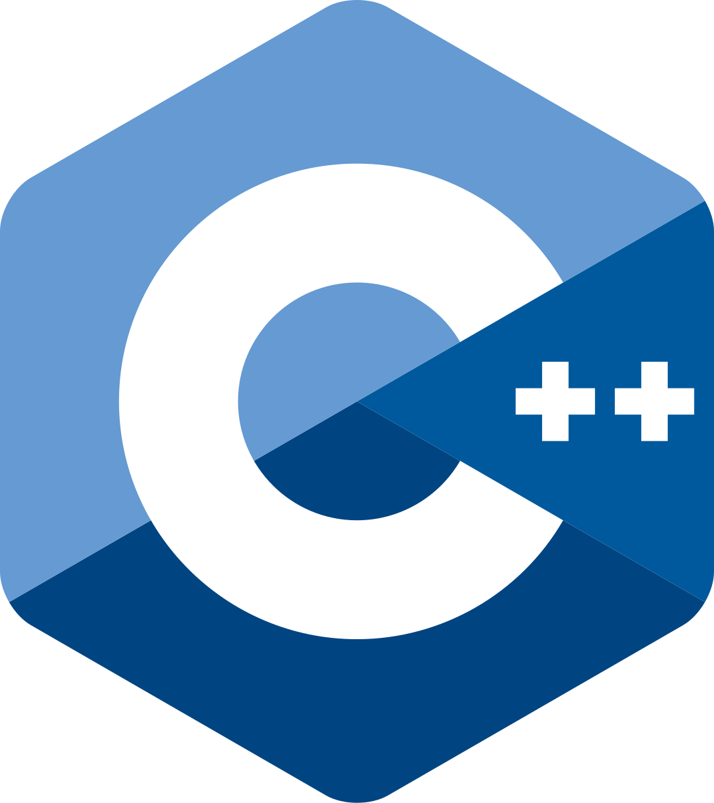
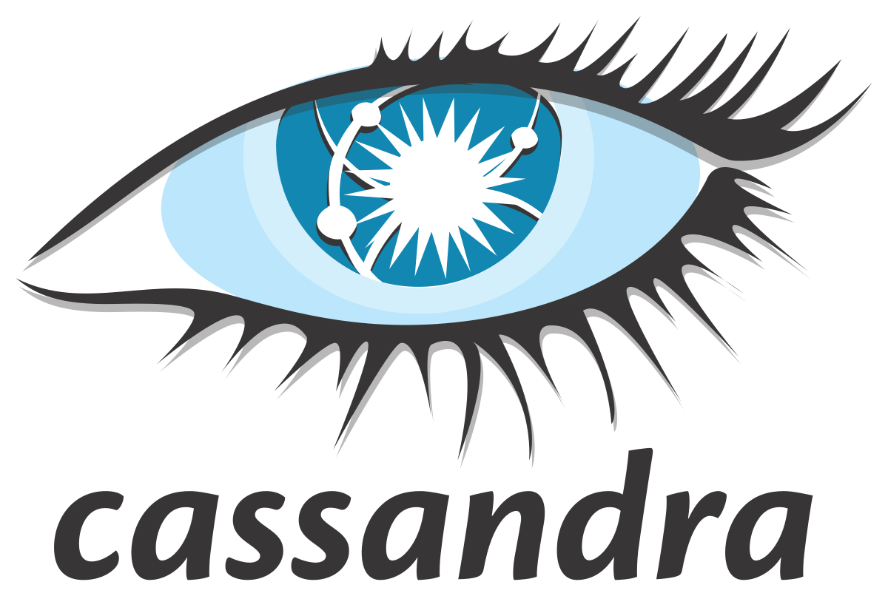
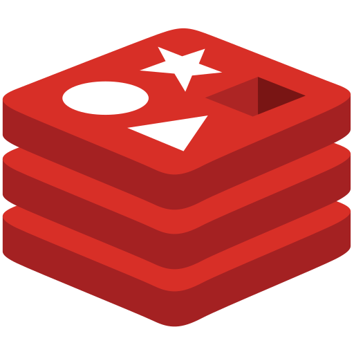
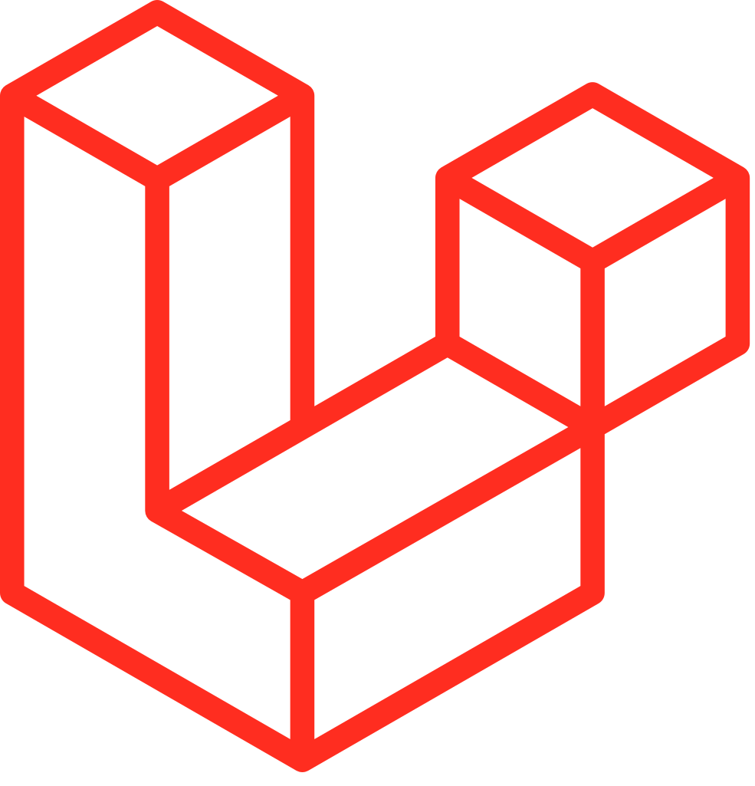
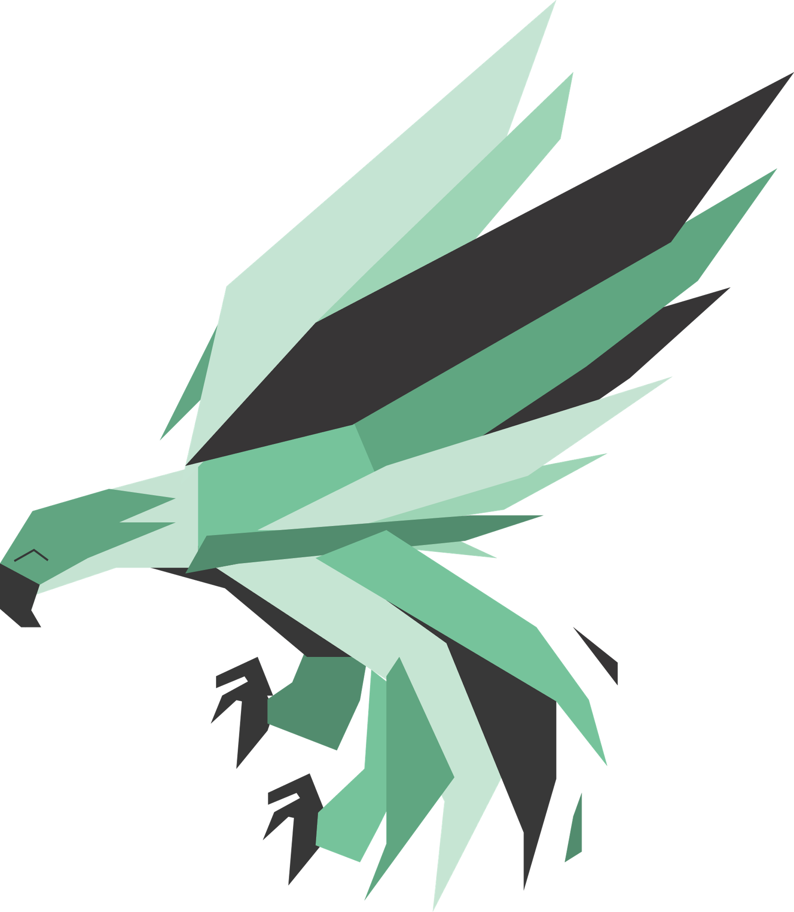
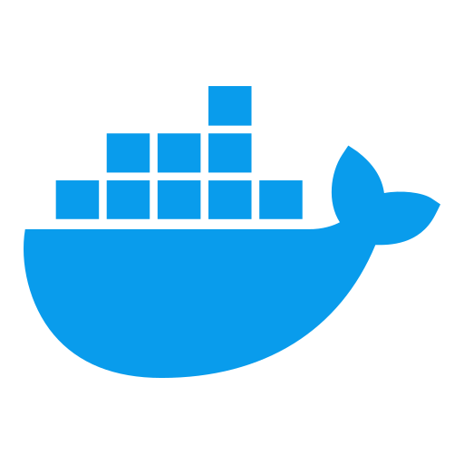

Хамраев Иван Дилшодович
Backend-Developer
About me
Education:Russia, Ivanovo, "ИГХТУ", 2021-2025, Information systems and techologies
Hard-skills:Programming languages: C++, C#, PHP, Kotlin, JavaScript, TypeScript, Python, SHELL.




Databases: MySQL, MsSQL, PostgreSQL, MariaDB, MongoDB, Cassandra, Redis.



Frameworks: Laravel, Phalcon, Slim, Bitrix.


Other: Docker, RabbitMQ, Beanstalkd, Kibana, AI-agents, Linux, Vim, Bash, etc...


Time management, Critical/System thinking, Stress resistance, Sociability.
Personal interests:Tech Enthusiast, Operating systems, Cyber security, Sport, Books.
Experience
February 2024 - June 2025 (8 months)
Технический стек:
JavaScript, TypeScript, Node.js, Express.js, MySQL, PostgreSQL, Nginx, Docker, React, Python.
Развитие крупной платформы для спортивных соревнований:
Занимаюсь долгосрочной поддержкой и функциональным расширением онлайн-платформы: от реализации новой бизнес-логики до оптимизации производительности.
Перевел критические узлы системы с Legacy JS на TypeScript, что повысило стабильность кода, упростило тестирование и ускорило внедрение новых фич на 30%.
Проектирование и разработка «под ключ»:
Спроектировал и реализовал архитектуру баз данных для различных проектов, выбирая оптимальное решение под задачи (MySQL, PostgreSQL).
Разрабатывал бэкенд-сервисы на Node.js (Express.js) и PHP (Slim), обеспечивая высокую скорость отклика и чистоту API.
Создавал фронтенд-приложения на React с акцентом на типизацию и масштабируемость компонентов.
Самостоятельно проводил технический аудит запросов клиентов, составлял планы реализации и оценивал сроки (ETA), успешно закрывая проекты в рамках бюджета.
Настраивал инфраструктуру для развертывания.
Технический стек:
JavaScript, TypeScript, Node.js, Express.js, MySQL, PostgreSQL, Nginx, Docker, React, Python.
Развитие крупной платформы для спортивных соревнований:
Занимаюсь долгосрочной поддержкой и функциональным расширением онлайн-платформы: от реализации новой бизнес-логики до оптимизации производительности.
Перевел критические узлы системы с Legacy JS на TypeScript, что повысило стабильность кода, упростило тестирование и ускорило внедрение новых фич на 30%.
Проектирование и разработка «под ключ»:
Спроектировал и реализовал архитектуру баз данных для различных проектов, выбирая оптимальное решение под задачи (MySQL, PostgreSQL).
Разрабатывал бэкенд-сервисы на Node.js (Express.js) и PHP (Slim), обеспечивая высокую скорость отклика и чистоту API.
Создавал фронтенд-приложения на React с акцентом на типизацию и масштабируемость компонентов.
Самостоятельно проводил технический аудит запросов клиентов, составлял планы реализации и оценивал сроки (ETA), успешно закрывая проекты в рамках бюджета.
Настраивал инфраструктуру для развертывания.
February 2024 - June 2025 (1 year 5 months)
Технический стек:
PHP, JavaScript, Python, Phalcon, Bitrix, beanstalkd, Redis, Kibana, Nginx, Apache, API маркетплейсов, API навигационных карт, Google/Yandex SMTP, Google/Yandex oauth.
Проектирование архитектуры и Core-разработка:
Дорабатывал и поддерживал масштабируемое высокопроизводительное ядро на базе фреймворка Phalcon для управления кастомными расширениями и внешними интеграциями.
Реализовал асинхронную обработку задач и параллельные вычисления в PHP через очереди сообщений (Beanstalkd), что позволило перенести тяжелые фоновые процессы из основного потока и ускорить отклик интерфейса.
Автоматизация E-commerce и CRM:
Разработал систему полной автоматизации жизненного цикла товаров для крупных маркетплейсов: от генерации карточек по внешним справочникам до динамического управления ценами через API.
Внедрил механизмы контроля интенсивности запросов (Rate Limiting), обеспечив стабильную работу с внешними сервисами в условиях жестких лимитов и высоких нагрузок.
Создал комплекс расширений для CRM-систем, оптимизировавших работу с воронками продаж и интеграцию с облачными хранилищами.
Инженерная оптимизация и инфраструктура:
Автоматизировал процесс анализа инцидентов, разработав Bash-инструментарий для эффективного извлечения данных из систем логирования (ELK/Kibana), что сократило время диагностики в 5 раз.
С нуля разворачивал и поддерживал циклы разработки (Dev, в некоторых случаях Prod-окружений), настраивал виртуальные хосты, многосайтовость и защиту соединений (SSL).
Проводил аудит безопасности и глубокий рефакторинг стороннего кода, устраняя критические уязвимости и последствия взломов на клиентских ресурсах.
Технический стек:
PHP, JavaScript, Python, Phalcon, Bitrix, beanstalkd, Redis, Kibana, Nginx, Apache, API маркетплейсов, API навигационных карт, Google/Yandex SMTP, Google/Yandex oauth.
Проектирование архитектуры и Core-разработка:
Дорабатывал и поддерживал масштабируемое высокопроизводительное ядро на базе фреймворка Phalcon для управления кастомными расширениями и внешними интеграциями.
Реализовал асинхронную обработку задач и параллельные вычисления в PHP через очереди сообщений (Beanstalkd), что позволило перенести тяжелые фоновые процессы из основного потока и ускорить отклик интерфейса.
Автоматизация E-commerce и CRM:
Разработал систему полной автоматизации жизненного цикла товаров для крупных маркетплейсов: от генерации карточек по внешним справочникам до динамического управления ценами через API.
Внедрил механизмы контроля интенсивности запросов (Rate Limiting), обеспечив стабильную работу с внешними сервисами в условиях жестких лимитов и высоких нагрузок.
Создал комплекс расширений для CRM-систем, оптимизировавших работу с воронками продаж и интеграцию с облачными хранилищами.
Инженерная оптимизация и инфраструктура:
Автоматизировал процесс анализа инцидентов, разработав Bash-инструментарий для эффективного извлечения данных из систем логирования (ELK/Kibana), что сократило время диагностики в 5 раз.
С нуля разворачивал и поддерживал циклы разработки (Dev, в некоторых случаях Prod-окружений), настраивал виртуальные хосты, многосайтовость и защиту соединений (SSL).
Проводил аудит безопасности и глубокий рефакторинг стороннего кода, устраняя критические уязвимости и последствия взломов на клиентских ресурсах.
June 2025 - Present
Технический стек:
PHP, Laravel, Slim, MySQL, Redis, RabbitMQ, Sphinx, Python, JavaScript, Vue.js, TypeScript, Docker, Nginx, Bitrix/Bitrix24, API маркетплейсов.
Оптимизация производительности и ресурсов:
Ускорил обработку аналитических запросов в 2–6 раз за счет глубокого рефакторинга кода, профилирования и оптимизации структуры MySQL (Eloquent ORM).
Снизил потребление ОЗУ на высоконагруженном проекте в 4 раза, внедрив полнотекстовый поисковый движок Sphinx и настроив политики кеширования в Redis (исправление TTL и конфигурации). Сократил время выполнения тяжелых SQL-запросов с 60+ сек до приемлемых значений за счет выноса логики поиска и сортировки в Sphinx.
Архитектура и интеграции:
Спроектировал и реализовал с нуля систему интеграции с Bitrix24, обеспечив отказоустойчивость и гарантию доставки данных через внедрение брокера сообщений RabbitMQ.
Разработал отдельные модули SaaS-системы аналитики маркетплейсов с интеграцией API, автоматизировав сбор параметров для внутреннего использования.
Обеспечил стабильную синхронизацию данных между ERP-системой, CRM-системой и веб-платформой, внедрив событийную модель обработки задач на базе очередей.
Инфраструктура и стек:
Настраивал и поддерживал окружение разработки с использованием Docker, Nginx и Linux (bash-скрипты).
Разрабатывал фронтенд-часть внутренних инструментов на Vue.js и TypeScript.
Внедрял AI-агентов в рабочие процессы для автоматизации рутинных задач.
Технический стек:
PHP, Laravel, Slim, MySQL, Redis, RabbitMQ, Sphinx, Python, JavaScript, Vue.js, TypeScript, Docker, Nginx, Bitrix/Bitrix24, API маркетплейсов.
Оптимизация производительности и ресурсов:
Ускорил обработку аналитических запросов в 2–6 раз за счет глубокого рефакторинга кода, профилирования и оптимизации структуры MySQL (Eloquent ORM).
Снизил потребление ОЗУ на высоконагруженном проекте в 4 раза, внедрив полнотекстовый поисковый движок Sphinx и настроив политики кеширования в Redis (исправление TTL и конфигурации). Сократил время выполнения тяжелых SQL-запросов с 60+ сек до приемлемых значений за счет выноса логики поиска и сортировки в Sphinx.
Архитектура и интеграции:
Спроектировал и реализовал с нуля систему интеграции с Bitrix24, обеспечив отказоустойчивость и гарантию доставки данных через внедрение брокера сообщений RabbitMQ.
Разработал отдельные модули SaaS-системы аналитики маркетплейсов с интеграцией API, автоматизировав сбор параметров для внутреннего использования.
Обеспечил стабильную синхронизацию данных между ERP-системой, CRM-системой и веб-платформой, внедрив событийную модель обработки задач на базе очередей.
Инфраструктура и стек:
Настраивал и поддерживал окружение разработки с использованием Docker, Nginx и Linux (bash-скрипты).
Разрабатывал фронтенд-часть внутренних инструментов на Vue.js и TypeScript.
Внедрял AI-агентов в рабочие процессы для автоматизации рутинных задач.